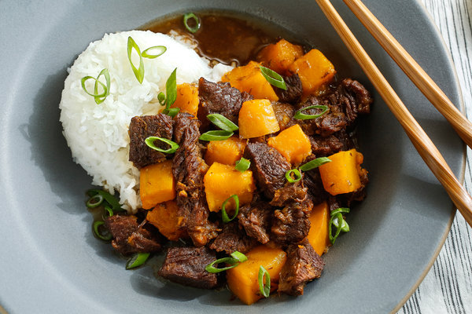

Mark Bittman
Yield: 4 servings
Time: At least 1 hour

Description
The beef stew here will be unfamiliar to most cooks, though it has much in common with the classic American dish. It is Japanese in origin and loaded with the warmth of soy, ginger, sweetness (best provided by mirin, the sweet Japanese cooking wine, but sugar or honey will do, too), winter squash and the peel and juice of a lemon. These simple and delicious counterpoints make a great stew.
Ingredients
- 1½ to 2 pounds boneless chuck in 1-inch to 1½-inch chunks
- 2 cups chicken stock, water or dashi
- ¼ cup soy sauce
- ¼ cup mirin, honey or sugar
- 10 nickel-size slices of ginger
- Black pepper to taste
- 1 lemon
- 1½ pounds peeled butternut, pumpkin or other winter squash or sweet potatoes in 1-inch chunks
- Salt to taste
Preparation
- In a large nonstick skillet over medium-high heat, sear meat until nicely browned on one side, about 5 minutes. Transfer chunks to a medium-size casserole.
- Add stock to the skillet, and cook over high heat, stirring and scraping until all the solids are integrated into the liquid. Pour into the casserole with soy sauce, mirin, ginger and a couple of grindings of pepper. Peel lemon, and add peel to the mixture. Juice lemon.
- Cover, and cook on top of stove (or in a 350-degree oven), maintaining a steady simmer. Stir after 30 minutes. Then check meat every 15 minutes.
- When meat is nearly tender, about 45 minutes, stir in squash and continue to cook until squash is tender but not mushy, about 15 to 20 minutes. Add salt if necessary, then stir in lemon juice. Serve.